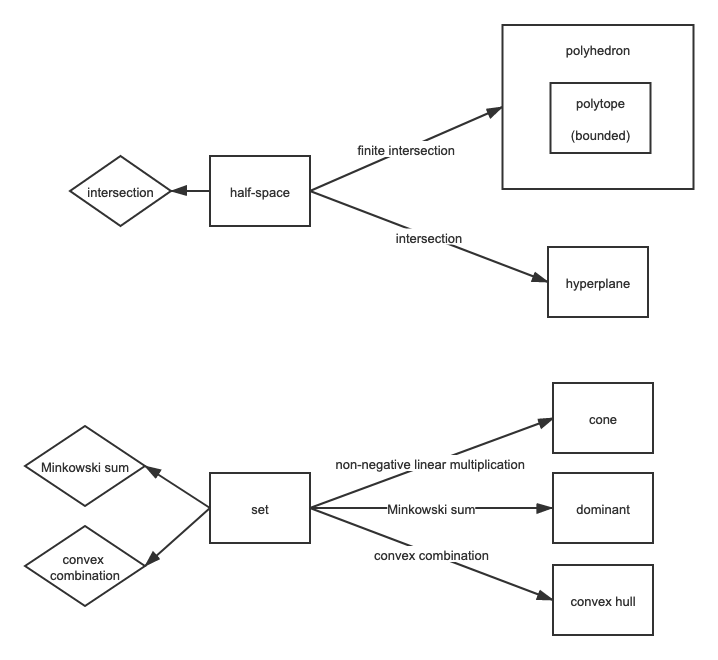

计划回顾
上周未完成的计划：
Graph paper: 50%.
- MoNet
- GraphSage
- GAT
Higher-order graph: 45.4%.
- Weisfeiler and Leman Go Neural: Higher-order Graph Neural Networks
- 🌟 Simultaneous group and individual centralities. Phillip Bonacich. Soc. Netw., 13(2):155–168, 1991.
- ⭐ Random walks and diffusion on networks, Physics Reports, N. Masuda, M. A. Porter, and R. Lambiotte, 2017.
- 🌟High-ordered random walks and generalized Laplacians on hypergraphs. Linyuan Lu and Xing Peng. In International Workshop on Algorithms and Models for the Web-Graph, pages 14–25. Springer, 2011.
- http://www.geometry.caltech.edu/pubs/dGDT16.pdf
- Discrete Connection and Covariant Derivative for Vector Field Analysis and Design (10.21)
Optimization: 100%
Misc： 0%.
Video: 66.7%.
- Game of thrones: Season 6
- Episode 6
- Episode 7
Game: 90%.
- 隐形的守护者第十章
总结：
- 为什么有些任务全部完成了，有些任务几乎没有完成呢？我觉得原因可以分为以下几点：
- 任务的可执行度上。比如：higher-order graph的论文阅读。我这里虽然列出了list，但是，list上的item之间缺乏联系。 我在读完一篇论文之后，可能心里存在很多疑问，此时与我的疑问最相关的论文并没有出现在list上，导致我不想沿着list去读。在读完list上的一篇论文之后，我不知道为什么要去读下一篇，list失去了引导力，致使我无法完成。与之相比，optimization的任务内部非常的连贯，我愿意按照它执行。
- Video这种娱乐性质的任务为什么没有完成？
- 习惯没有养成。我坚持的是routine指导行为的方法，绝不要忽视习惯的力量。而我现在的routine并没有建立起来，比如健身时间，休息时间，娱乐时间，都是散乱的。不过，鉴于这周小伙伴住在我房间里的情况，我不能太过任性，一味坚持自己的时间表，还需要适当考虑到她的生活习惯。习惯留待她离开之后再培养叭。
收获
本周在论文上的收获不大，在课程mathematical optimization收获更多些，坚持按计划学习了课程。此外，重新布置起自己的blog，在对blog进行修整之后，还要经营我和元元的blog哦～
周六和熊，小可爱，室友一起度过了12个小时，虽然这个时间预算对我来说有些超支了😂，完全没想到会和小伙伴玩这么久。不过元元有句话开导的很对“不要因为烦恼而影响玩耍时的快乐”，“很占据时间，又不能拒绝”时，我应该尽力去享受这段时间，而不是为被额外占据掉的时间焦虑。我对自己的时间真的很吝啬。其实反过来想想，对于与朋友在一起的时间，如果事先有个预期的话，我会舒服很多。害，说到底就是想尽可能地掌控。
Mathematical Optimization
对于这次总结，我希望达到的目的不是复述知识，而是建立起知识之间的联系，突出要点。
经过复习，我发现我对以下内容掌握得不够：
- degenerate/degeneracy： 引入这个概念是为了干什么？


Graph models
本周的认识都是high-level的，没有基础知识的积累：GIN的那篇paper从现有的基于邻居消息传递的GNN框架的局限性出发，引起我思考：什么样的模型是基于这个框架的，除此之外还有哪些其他模型种类。各种基于Laplacian的模型是不是也基于这个邻居消息传递的？比如GCN，其实是根据Laplacian矩阵选择weighted的邻居的。
下周计划
Mathematical optimization
Video
- 10.5 (10.26)
- 10.8 (10.27)
- 10.12 (10.29)
- 10.15 (10.30) (last 7 minutes)
Script:
- 18-37 (10.28)
Graph Papers
这周准备采取综述，书籍和最新论文相结合的模式来进行领域学习。学习的目的：
- 了解图领域的主要任务
- 了解现有模型没有解决的问题
- 未来可能的发展方向是什么
- 如何把经典理论和现代nn的方法结合起来呢？
- ICLR2021专栏：
- Graph-graph similarity network
- how to find your friendly neighborhood: graph attention design with self-supervision
- graph neural network pooling by edge cut
- NIPS专栏：
- （10.26） 🌟 Random walks on hypergraphs. Timoteo Carletti, Federico Battiston, Giulia Cencetti, and Duccio Fanelli. Phys. Rev. E, 101(2):022308, 2020. 及其周边
- Path Integral Based convolution and pooling for graph neural networks
- Convergence and Stability of GCN on Large Random graphs
- Erdos Goes Neural: an Unsupervised Learning Framework for Combinatorial Optimization on Graphs
- Learning Graph Structure With A Finite-State Automaton Layer
- KDD2020: GraphSTONE
- 综述：
- 📖 The Emerging Field of Signal Processing on Graphs
- 📖 Discrete Signal Processing on Graphs
- 📖 ⭐ Introducing Hypergraph Signal Processing:Theoretical Foundation and Practical Applications
- 📖 Centralities in simplicial complexes. applications to protein interaction networks.Ernesto Estrada and Grant J Ross. 2018.
- 📖 Centrality measures in simplicial complexes, Daniel Herna ́ndez Serrano and Dar ́ıo Sa ́nchez G ́omez. 2019
Life
- Guitar: 七月上
- 毛笔字一张
- Deutsch lernen 看三集
- 1
- 2
- 3
- 权力的游戏：
- 第六季第五集
- 第六集
- 第七集
- 做一个南瓜发糕
- 隐形的守护者玩完
- 开始玩 我的世界